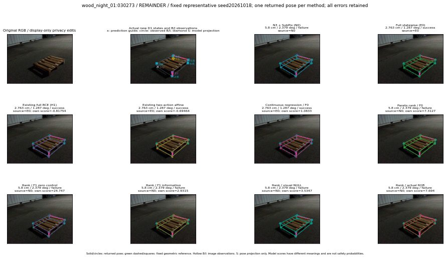

실선은 반환 자세, 초록 점선은 고정 기하 참조입니다. S는 영상 관측이 아닙니다. 점수는 모델별 의미가 다르며 보정된 안전 확률이 아닙니다. 개인정보 처리는 표시 사본에만 적용했습니다.
| 방법·seed | 위치 / 회전 / 공동성공 | 실제 출처 | 선택 후보 | 각 모델 자체 점수 |
|---|---|---|---|---|
| N0 | 5.8 cm / 2.379 deg / failure | N0 | N/A | N/A |
| E0 | 2.763 cm / 1.287 deg / success | E0 | N/A | N/A |
| E0_REGENERATED | 2.763 cm / 1.287 deg / success | E0 | E0_REGENERATED | N/A |
| POSEFIX_SUBPIX_PF_ANCHOR | 3.525 cm / 2.01 deg / success | OTHER | N/A | N/A |
| POSEFIX_SUBPIX_YOLO_ANCHOR | 3.525 cm / 2.01 deg / success | OTHER | N/A | N/A |
| D1_H1_MLP_s20261018 | 2.763 cm / 1.287 deg / success | E0 | E0_REGENERATED | -0.8175365924835205 |
| D1_H1_MLP_s20261019 | 2.763 cm / 1.287 deg / success | E0 | E0_REGENERATED | -0.6425795555114746 |
| D1_H1_MLP_s20261020 | 2.763 cm / 1.287 deg / success | E0 | E0_REGENERATED | -1.79642915725708 |
| D1_H1_PAIR_MLP_s20261018 | 5.8 cm / 2.379 deg / failure | N0 | N0 | -1.568741798400879 |
| D1_H1_PAIR_MLP_s20261019 | 5.8 cm / 2.379 deg / failure | N0 | N0 | -1.6041275262832642 |
| D1_H1_PAIR_MLP_s20261020 | 5.8 cm / 2.379 deg / failure | N0 | N0 | -2.2391092777252197 |
| D1_H1_PAIR_ROLE_AFFINE_s20261018 | 2.763 cm / 1.287 deg / success | E0 | E0_REGENERATED | -0.694643497467041 |
| D1_H1_PAIR_ROLE_AFFINE_s20261019 | 2.763 cm / 1.287 deg / success | E0 | E0_REGENERATED | -0.8656472563743591 |
| D1_H1_PAIR_ROLE_AFFINE_s20261020 | 2.763 cm / 1.287 deg / success | E0 | E0_REGENERATED | -0.6238064765930176 |
| R_CONT_F0_s20261018 | 2.763 cm / 1.287 deg / success | E0 | E0_REGENERATED | 1.0832772254943848 |
| R_CONT_F0_s20261019 | 2.763 cm / 1.287 deg / success | E0 | E0_REGENERATED | 1.0019041299819946 |
| R_CONT_F0_s20261020 | 2.763 cm / 1.287 deg / success | E0 | E0_REGENERATED | 1.0559587478637695 |
| R_ORDER_F0_s20261018 | 5.8 cm / 2.379 deg / failure | N0 | N0 | 7.31266975402832 |
| R_ORDER_F0_s20261019 | 5.8 cm / 2.379 deg / failure | N0 | N0 | 4.733757972717285 |
| R_ORDER_F0_s20261020 | 5.8 cm / 2.379 deg / failure | N0 | N0 | -12.233028411865234 |
| R_ORDER_F1_ZERO_s20261018 | 5.8 cm / 2.379 deg / failure | N0 | N0 | 24.747203826904297 |
| R_ORDER_F1_ZERO_s20261019 | 4.021 cm / 0.9781 deg / success | OTHER | G10/ORIGINAL_WD/endpoint/9 | 20.612834930419922 |
| R_ORDER_F1_ZERO_s20261020 | 5.8 cm / 2.379 deg / failure | N0 | N0 | 9.268360137939453 |
| R_ORDER_F1_s20261018 | 5.8 cm / 2.379 deg / failure | N0 | N0 | 2.9314627647399902 |
| R_ORDER_F1_s20261019 | 5.8 cm / 2.379 deg / failure | N0 | N0 | 5.728326320648193 |
| R_ORDER_F1_s20261020 | 5.8 cm / 2.379 deg / failure | N0 | N0 | 2.2405340671539307 |
| V_ORDER_NULL_s20261018 | 5.8 cm / 2.379 deg / failure | N0 | N0 | 3.534719944000244 |
| V_ORDER_NULL_s20261019 | 5.8 cm / 2.379 deg / failure | N0 | N0 | 1.4272493124008179 |
| V_ORDER_NULL_s20261020 | 5.8 cm / 2.379 deg / failure | N0 | N0 | 3.7706613540649414 |
| V_ORDER_RGB_s20261018 | 5.8 cm / 2.379 deg / failure | N0 | N0 | 7.6939592361450195 |
| V_ORDER_RGB_s20261019 | 5.8 cm / 2.379 deg / failure | N0 | N0 | 1.0819863080978394 |
| V_ORDER_RGB_s20261020 | 5.8 cm / 2.379 deg / failure | N0 | N0 | -3.0448877811431885 |